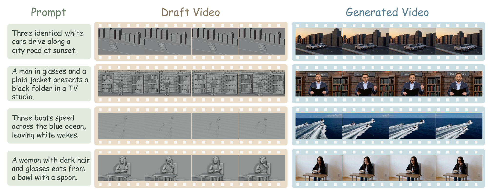

Direct generation vs. Video-Coder. Instead of prompting the generator directly, Video-Coder writes and runs code to build a 3D scene, renders a draft video, and passes it to the generator as an explicit structure and motion signal.
Video generators get the pixels right but the physics wrong. Code can fix the structure.
Recent years have witnessed remarkable progress in video generation in terms of visual quality and temporal consistency. However, generating videos with precise spatial structure, coherent motion dynamics, and controllable scene composition remains challenging. We introduce Video-Coder, the first attempt to train a code-driven video generation agent, which autonomously writes and executes code to construct a dynamic 3D scene (Draft Video) that provides structure and motion signals to downstream video generators.
To support this paradigm, we design a dedicated data pipeline and curate two datasets, Video-Coder-SFT-10k and Video-Coder-RL-4k, with diverse prompts and ground-truth reference videos. We further develop the Video-Coder Harness, a unified interactive environment integrating code execution, 3D scene rendering, and execution feedback for agent training and inference. We then train Video-Coder with SFT followed by harness-native agentic reinforcement learning with dual reward feedback, combining execution-based and video-based rewards, and an annealing strategy that gradually shifts weight toward the video reward.
Experiments show that Video-Coder improves MiniMax-H3 by approximately 7 points on PhyGenBench and 24 points on VBench-2.0. We fully open-source our data, models, and code.
Write, run, look, revise.
The agent works inside the Video-Coder Harness: a sandbox with Blender installed. Every scene is rendered as untextured gray clay, so the draft carries only structure and motion, and appearance is left to the video generator.
Write the scene
From the prompt, the agent plans objects, layout, motion and camera, then writes a Blender Python program.
Check & render
It calls check_script for a fast static check and run_blender to execute and render the draft.
Read the feedback
The harness returns tracebacks, content checks (empty frames, static video, objects off-screen) and sampled frames.
Revise & submit
The agent edits its code until the draft matches. On submit, the harness re-runs the script from scratch and only accepts it if it passes again.

Four-stage data construction. Captions are rewritten into scene-centric prompts; Gemini 3.8 Flash produces multi-turn trajectories in the harness; MiniMax-H3 turns each draft into a ground-truth video; three filters keep only valid, high-quality, prompt-consistent samples.
Learn to be a coding agent
Qwen3.5-9B is fine-tuned on 10k multi-turn harness trajectories: planning, writing Blender code, calling tools, and reacting to feedback.
Optimize for the final video
GRPO on 4k prompt–reference pairs, with rollouts executed live in the harness and drafts rendered into videos by a frozen generator.
Works with other generators
Trained with MiniMax-H3 in the loop, the same agent also lifts OmniWeaving at test time (0.48 → 0.51 on PhyGenBench).
Early on, most rollouts crash, so the binary execution reward teaches reliable tool calls. Its weight decays over training, handing control to the video reward (a VLM judge comparing against the reference video). α = 0.5.
Same generator, better physics.
Video-Coder only changes what the generator is conditioned on. Adding its draft video to MiniMax-H3 lifts every physics dimension on both benchmarks.
Full PhyGenBench table · 15 methods
| Method | Mechanics | Optics | Thermal | Material | Average |
|---|---|---|---|---|---|
| Commercial | |||||
| Pika | 0.35 | 0.56 | 0.43 | 0.39 | 0.44 |
| Gen-3 | 0.45 | 0.57 | 0.49 | 0.51 | 0.51 |
| Kling | 0.45 | 0.58 | 0.50 | 0.40 | 0.49 |
| Open models | |||||
| CogVideoX | 0.39 | 0.55 | 0.40 | 0.42 | 0.45 |
| Open-Sora V1.2 | 0.43 | 0.50 | 0.44 | 0.37 | 0.44 |
| LaVie | 0.30 | 0.44 | 0.38 | 0.32 | 0.36 |
| Vchitect-2.0 | 0.41 | 0.56 | 0.44 | 0.37 | 0.45 |
| MiniMax-H3 | 0.61 | 0.73 | 0.52 | 0.55 | 0.61 |
| HunyuanVideo | 0.33 | 0.39 | 0.26 | 0.30 | 0.33 |
| OmniWeaving | 0.48 | 0.56 | 0.43 | 0.39 | 0.48 |
| Wan2.2-TI2V-5B | 0.55 | 0.58 | 0.53 | 0.50 | 0.54 |
| Cosmos-Predict2.5 | 0.30 | 0.33 | 0.41 | 0.39 | 0.35 |
| LTX-Video-2B | 0.51 | 0.58 | 0.48 | 0.45 | 0.51 |
| Video-CoCo | 0.51 | 0.58 | 0.48 | 0.45 | 0.51 |
| Ours | |||||
| Video-Coder-9B + OmniWeaving | 0.52 | 0.58 | 0.52 | 0.44 | 0.51 |
| Video-Coder-9B + MiniMax-H3 | 0.68 | 0.79 | 0.60 | 0.61 | 0.67 |
Full VBench-2.0 table · physical dimensions
| Method | Mechanics | Thermotics | Material | Average |
|---|---|---|---|---|
| Sora | 62.22% | 43.36% | 64.94% | 56.84% |
| Kling 1.6 | 65.55% | 59.46% | 68.00% | 64.34% |
| HunyuanVideo | 76.09% | 56.52% | 64.37% | 65.66% |
| MiniMax-H3 | 67.59% | 47.22% | 48.94% | 54.58% |
| CogVideoX-1.5 | 80.80% | 67.13% | 83.19% | 77.04% |
| Video-Coder-9B + MiniMax-H3 | 88.67% | 70.88% | 75.02% | 78.19% |
SFT alone gets part of the way; agentic RL adds the rest. Dropping either reward, or keeping both at fixed weights, costs 0.02–0.04. Without annealing, the agent over-fits to the execution reward and writes safe but conservative programs.
The draft decides the count, layout and motion. The generator adds the look.
Three cars, three boats: object counts and placement set in code carry straight through to the final video.

Prompt → draft video → generated video. Vehicles, human actions and object interactions.
BibTeX
@article{wang2026videocoder,
title = {Video-Coder: Reinforcing Agentic Coding for Video Generation},
author = {Wang, Chaoyang and Gao, Sicheng and Hu, Junan and Li, Kunyang and
Chen, Dongyang and Zhou, Yiyang and Yao, Huaxiu and Lee, Yong Jae and
Timofte, Radu and Shang, Yuzhang},
journal = {arXiv preprint},
year = {2026}
}